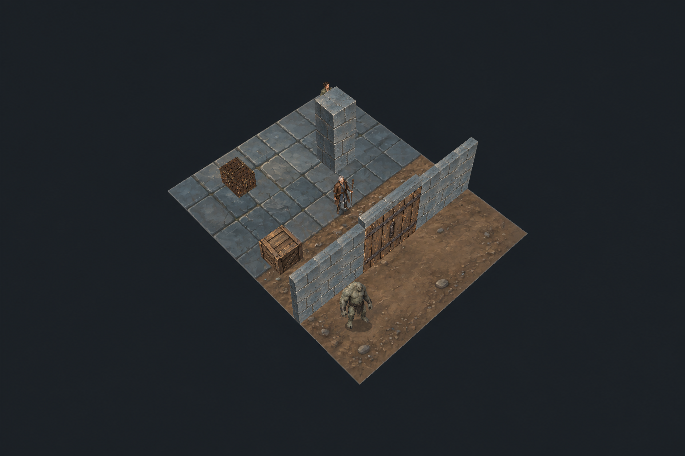
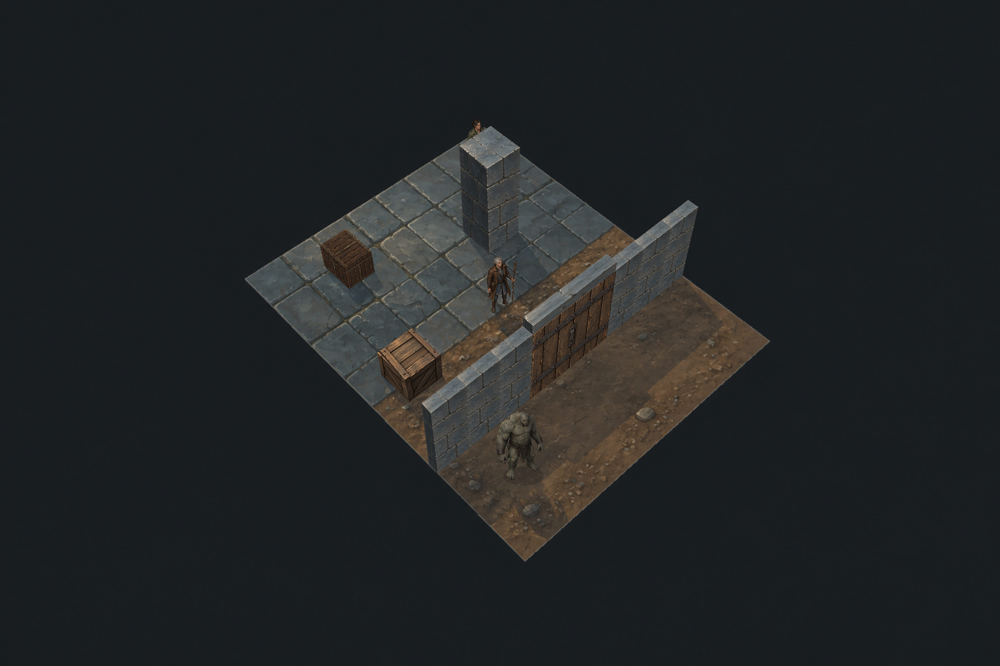
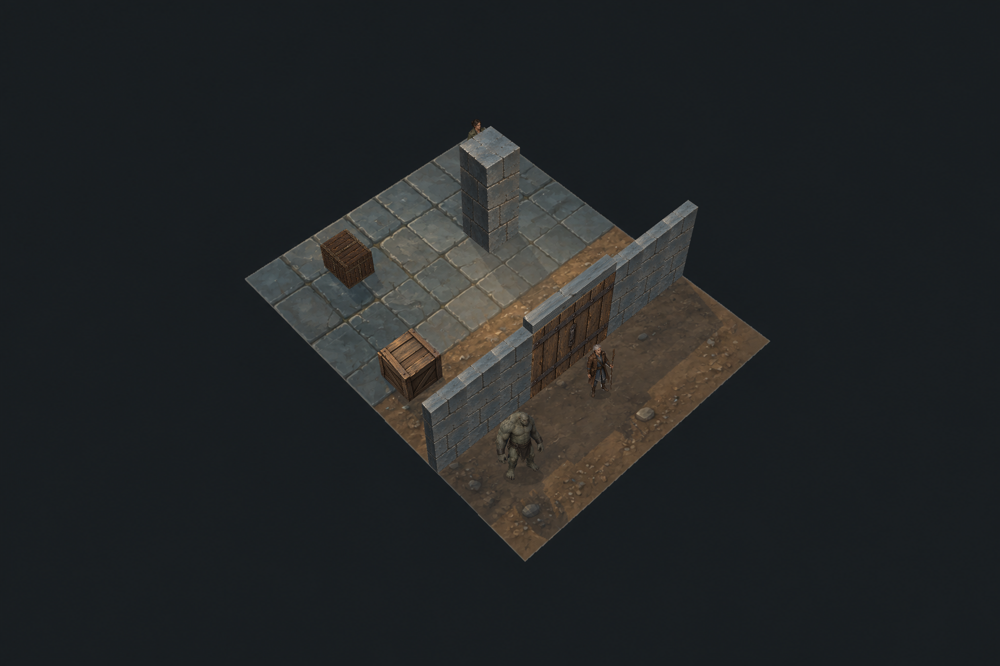
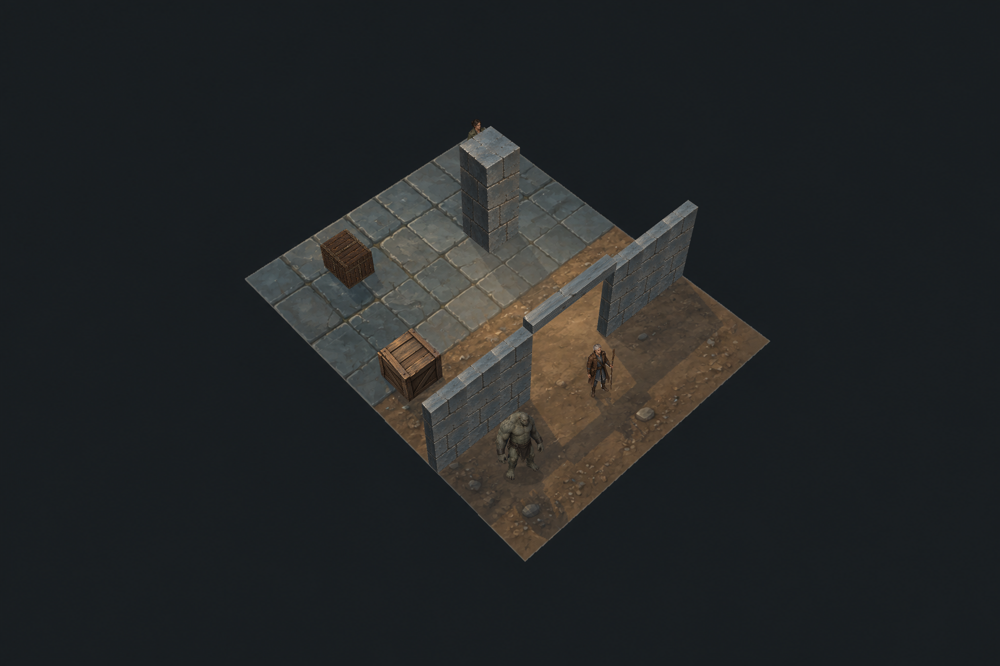

Godot is the shipping target; Pixi is the test harness. All scenes use the E04M2 v3 contours and projection C. These overviews display 2880×1920 fresh captures at 960×640; original PNG links retain full detail.
Agent recommendation: B as the neutral test baseline, with restrained warm/cool lights added from scene data. Grounding improves, but baked wall highlights/repetition and floor source detail remain. This is a scoped lighting mechanism proof, not complete faction/style or physically correct material acceptance.


Shadow geometry follows footprints, heights and object state. The ground contact remains fixed when the body lifts. A single cast-shadow layer prevents overlap from doubling its darkness. Actor shadows approximate an upright painted card; their anatomy is not reconstructed in 3D. Ground and entity point-light visibility use height-aware blocker rays. Structural face normals are explicit; actor lighting is an approximate flat response.
Same mage position. A source-registered chest pixel is unchanged by warm light behind the closed gate and changes once the gate opens. The original receiver implementation lacked entity occlusion; that earlier attempt remains preserved.


The opaque-shadow union preserves equal darkness at overlap; the deliberately wrong per-shape alpha darkens twice. Light variants do not change sim state. Wall receiving shadows, detailed actor normal maps, final faction cohesion and shipping performance remain unqualified.
The first high-resolution PNG encodings exceeded the 100MB artifact ceiling. The recorded overrun and codec-only correction preserve every decoded capture pixel; the historical limit violation is not relabelled a pass.
Includes fixture placement followed by a real-time demo. Characters remain frozen poses; gait and gear are next separate tests.
Live lighting fixture (local server) · Findings · Contour repair · Suite progress
{kind=link}
{kind=link}
{kind=link}
{kind=link}